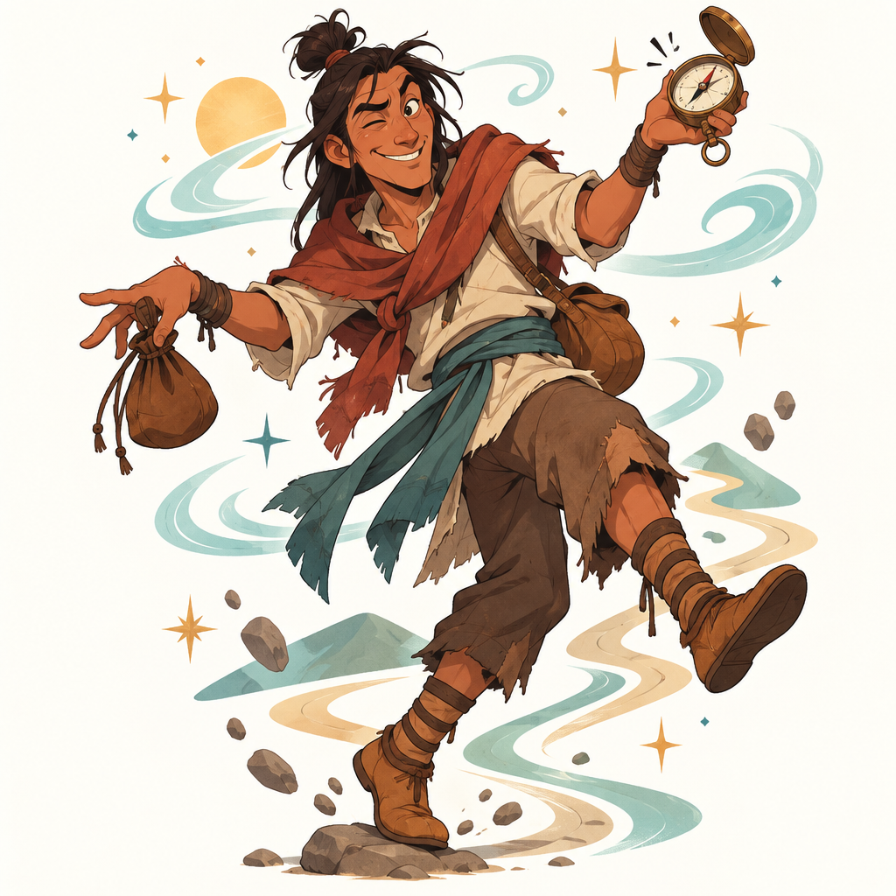

왁준카가 신화 속 존재
- 이런 이야기예요
- 위네바고족(오늘날의 호청크족) 이야기에 나오는 왁준카가는 들소를 잡아 고기를 자르려 했어요. 그런데 왼손이 들소를 붙잡고 놓아주지 않아서, 오른손과 왼손이 서로 싸우기 시작했지요. 결국 왼손이 칼에 베이자 왁준카가는 "내가 왜 이런 짓을 했지?" 하며 울었어요.
- 이렇게 뒤집었어요
- 남을 속이기보다 자기 자신과 싸우며 모든 일을 거꾸로 해 버려요. 하지만 이런 엉뚱한 실수를 하나씩 겪으면서 세상과 자기 자신을 조금씩 알아 가요.
- 생각해 볼까요?
- 실수를 많이 하는 주인공에게서 우리는 무엇을 배울 수 있을까요?
- 함께 읽을 책
- 폴 라딘 『The Trickster』 (어른을 위한 연구서예요)